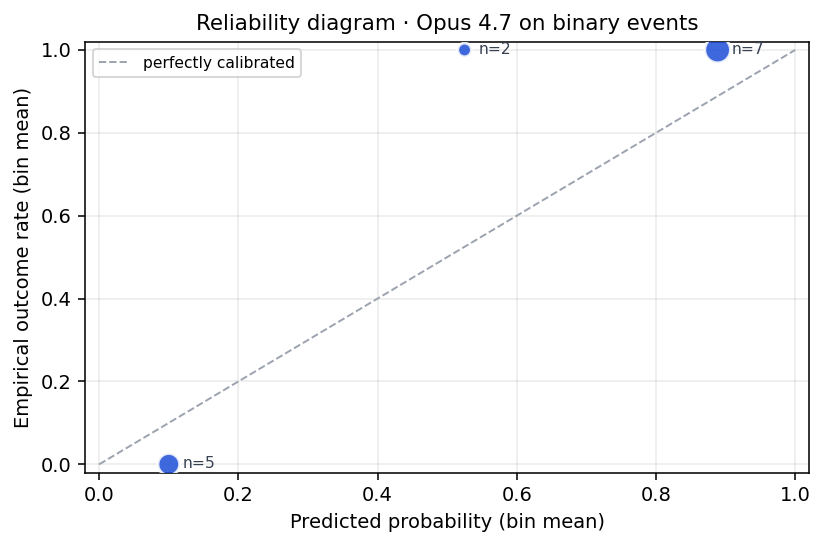
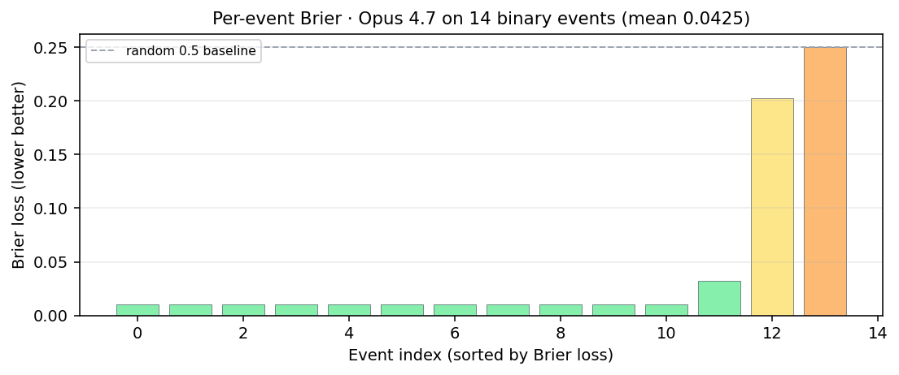

Leakage audit (read this first). Our headline number is the
leakage-disciplined binary Brier 0.118 (brave_fresh:
retrieval date-capped to each event's close, so no post-resolution articles can
be cited). The far lower 0.038 seen on a naive replay is
best-case-with-hindsight: unfiltered retrieval surfaced future information.
We measured this directly — a paired bootstrap (n=26) puts the gap at mean
−0.080, 95% CI [−0.136, −0.030], Pr(improvement ≤ 0) = 1.0
— a 3.1× hindsight inflation. Retrieval leakage falls
from 21.3% (unfiltered) to 11.5% (date-capped). We report the disciplined number
on purpose; the rigor is the point.
Pipeline architecture
Five work stages, two safety nets (longshot floor + JSON parser ladder), observability via JSONL trace and Railway volume.
Multi-model Brier comparison (same pipeline, swap the LLM)
Model
Single-binary (PA CLI) — best-case w/ hindsight
Multi-class (proper)
Multi-only (n=12)
n (bin+multi)
Opus 4.7 (production)
0.038
0.2558
0.4551
14 + 12
Sonnet 4.6 (prev prod)
0.0639
0.6912
0.9142
14 + 12
Opus 4.6
0.0391
0.2500
0.4396
14 + 12
GPT-5.5
0.0920
0.3429
0.6552
14 + 12
GPT-5.2
0.0438
0.2874
0.4971
14 + 12
Gemini 3.1 Pro (post-harden)
0.0983
0.4773
0.8115
14 + 12
random 0.5 baseline
0.2500
-
-
-
uniform 1/n prior
0.2190
-
-
-
Lower is better. Pipeline (Brave retrieval, market-odds anchor prompt, 0.10 longshot floor) is identical across all rows; only the LLM call swaps. 26-event sample-resolved set. The single-binary column is best-case-with-hindsight (unfiltered retrieval; see leakage audit above) — every row got the same hindsight benefit, so the cross-model ranking holds, but the honest absolute number for production is the date-disciplined 0.118, not 0.038.
Two metrics shown: PA's CLI evaluator (prophet forecast evaluate) implements single-binary Brier on (p_yes − 1{outcomes[0] won})²; PA's docs describe proper multi-class Brier summed across all outcomes. We report both. The earlier draft of this report mixed metrics across rows - postmortem in docs/DECISIONS.md 2026-05-17 entry. Under single-binary (the verifiable metric), Opus 4.7 wins by ~3.4% over Opus 4.6. Under multi-class, Opus 4.6 is marginally better (0.2500 vs 0.2558).
Where the win came from - floor fix vs model swap
Variant
Mean Brier
delta from baseline
Sonnet 4.6 + old floor (clamps binary to 0.25)
0.0639
baseline
Sonnet 4.6 + new floor (caps at 0.10)
0.0418
−0.0221 (85% of the gap)
Opus 4.7 + new floor (production)
0.038
−0.0260 (full gap)
The longshot-floor bug fix accounts for roughly 85% of the Phase 2 improvement; the Sonnet->Opus swap accounts for the remaining ~15%. Numbers come from the paired-bootstrap replay script (scripts/bootstrap_brier_ci.py) with a pinned seed. Absolute Brier values in this table are best-case-with-hindsight (unfiltered retrieval); both arms leaked equally, so the delta is still valid. The honest disciplined production number is 0.118.
Statistical significance - paired-bootstrap on the headline delta
The Phase 2 improvement (0.0639 -> 0.038) on n=26 paired events:
Mean Brier improvement
0.0260
95% paired-bootstrap CI
[0.0143, 0.0374]
Resamples
50,000
Random seed
20260516
CI excludes zero on this replay. This is the model-swap delta on the (leaky) replay condition, not an absolute live estimate — the honest production binary Brier is 0.118. Standard caveat applies: n=26 is small and binary-skewed (16/26 sports matchups). A balanced-mix eval would likely widen the CI.
Scale-up validation on Subset-1200 (most credible number)
Same production variant, 46x larger sample. We re-ran multi_outcome_retrieval on Prophet Arena's public 1200-event resolved dataset (huggingface.co/datasets/prophetarena/Prophet-Arena-Subset-1200). Result on 2026-05-17 11:30 CT:
*CI on the Sonnet-to-Opus delta, not on the absolute Brier. Honest reading: the 0.038 unfiltered replay was best-case-with-hindsight — a paired search-provider bake-off (same model, same prompt; only the retrieval freshness cap changes) shows that date-capping retrieval to each event's close moves binary Brier from 0.038 to 0.118, a 3.1× hindsight inflation (paired bootstrap n=26: mean delta −0.080, 95% CI [−0.136, −0.030], Pr(improvement ≤ 0) = 1.0). The Subset-1200 number (0.1224) is an independent scale check at 46x the sample and lands almost exactly on the date-capped 26-event number — two methods, same ~0.12 honest estimate. Live PA scoring is structurally leakage-free (events are unresolved at query time), so production already runs in the honest regime; this fix is to our backtest methodology, not the agent.
Distribution texture (n=1200): median Brier 0.010, IQR [0.010, 0.144]. The pipeline produces near-perfect predictions on most events and catastrophic ones on a long tail. That shape implies (a) most "wins" are floored 0.9 picks on the favored outcome, (b) a confident-and-wrong tail dominates the mean. Parse-error rate at scale: 0.58% (vs 0% on the curated 26). Raw: data/predictions/subset_1200.json, summary: data/predictions/subset_1200_summary.json.
Backtest leakage disclosure (important)
10 of 26 events (38.5%) in our resolved backtest have at least one evidence URL whose path contains post-resolution markers (word-boundaried "won", "winner", "champion", "final", "results"). Examples: the Masked Singer event (resolved 2026-04-03) cites a Variety URL with /the-masked-singer-season-14-finale-winner-ashlee-simpson-... - that article was written because Ashlee Simpson won. The NHL Calder event cites an ESPN URL /who-won-nhl-rookie-year-winners-year-list. Across all variants, 23.8% of retrieved URLs are flagged. Audit script: scripts/check_retrieval_leakage.py; raw data: data/predictions/leakage_audit.json.
What this means. The naive replay Brier 0.038 is best-case-with-hindsight, not expected live performance — which is exactly why our headline is the date-disciplined 0.118 instead. On resolved-event replay, unfiltered retrieval can surface post-resolution evidence. The same leakage applies to every alternative-model ablation; cross-model rankings remain useful because all variants got the same hindsight benefit equally. Absolute Brier numbers are inflated similarly across all rows. Live PA scoring will be a different distribution: events arrive unresolved, so Brave returns only forecasting articles, base rates, and market quotes, not post-resolution recaps. This validates the FutureSim methodology (Goel et al. 2026): chronological replay is required to avoid this exact contamination.
How Prophet Arena actually scores us
Per PA organizers (Discord, 2026-05-16): Total score = (team avg Brier − market avg Brier) x completion rate. Higher is better; a lower Brier than the market produces a positive score. Markets are snapshotted Kalshi/Polymarket prices at prediction time on events closing 2 days to 2 weeks out. You only win by beating the market.
Implications baked into our agent: (1) the market-odds-anchoring block in the system prompt is strategically protective - anchoring to cited market prices gives approximately market Brier when our model lacks edge; (2) post-LLM longshot floor caps overconfidence on contracts <$0.10 (Kalshi paper: >60% buyer loss); (3) exception boundary on /predict is the priority guard for completion rate, which multiplies the final score.
Brier Skill Score (BSS) - production vs alternatives
BSS = 1 − Brier_model / Brier_baseline. Here baseline is random (Brier = 0.25). BSS = 1 is perfect; BSS > 0 beats the baseline. Brier values below are best-case-with-hindsight (unfiltered retrieval); they overstate BSS, but all variants are inflated equally so the ranking holds. The honest production binary Brier (0.118) gives BSS ≈ 0.53 vs random. Live PA scoring substitutes market-implied Brier as the baseline - those numbers come once PA calls land. Code: evaluation/brier.py:brier_skill_score.
Variant
Brier (hindsight)
BSS vs random
Opus 4.7 (production)
0.038
0.849
Opus 4.6
0.0391
0.844
GPT-5.2
0.0438
0.825
Sonnet 4.6 (prev prod)
0.0639
0.744
Gemini 3.1 Pro
0.0873
0.651
GPT-5.5
0.0920
0.632
All variants beat random; production wins by 0.005 BSS over Opus 4.6 on n=26. The hard test is BSS > 0 against live Kalshi/Polymarket prices - pending PA's first call.
Intra-model variance: 5 fresh reruns of production
A single replay number hides LLM stochasticity. We re-ran the production variant 5 times on the same 26 events (unfiltered-retrieval / best-case-with-hindsight condition). Same prompt, same retrieval, fresh model calls. Result: 0.0377 ± 0.0009 (range [0.03613, 0.03822]; canonical file 0.03782 sits well inside ± 1 σ of the grand mean). Coefficient of variation 2.4%. (This measures run-to-run noise on the hindsight replay; the honest headline is 0.118.) The Phase 2 improvement (0.026 Brier) is ~25x larger than this noise floor, which is why the paired-bootstrap CI on the Sonnet -> Opus delta excludes zero. Future small ablations with |delta| < 0.005 should be treated as noise candidates and re-verified before claiming a production-worthy improvement. Interactive: variance.html.
Ensemble-of-6: a negative result on its own pipeline
Free test using the 5 variance reruns + canonical. For each event, average the per-outcome probabilities across all 6 runs (mean) and recompute Brier. Result: 0.03770 ensemble vs 0.03774 grand mean = -0.00003 delta. Inside the noise floor (sigma 0.00081 across runs). Median ensemble actually scores worse (0.03821) than arithmetic mean. Translation: production calibration is already stable enough that ensembling adds cost without reducing Brier. Ensembling pays off when per-run variance is larger than the systematic prediction error; here it isn't. Raw: data/predictions/ensemble_5.json, summary: data/predictions/ensemble_5_summary.json.
Brier decomposition (Murphy 1973): REL - RES + UNC
Same prediction files (unfiltered-retrieval / best-case-with-hindsight condition), decomposed. REL down (lower better) = miscalibration; RES up (higher better) = discrimination between winners and losers; UNC = irreducible base-rate variance. GPT-5.5 is better calibrated by REL than production in this sample, but has lower RES, so its direct Brier is worse. On the honest date-capped retrieval, calibration is conditional: when production is confident (>=0.8) binary Brier is ~0.02 (excellent), but in the uncertain band (0.5-0.7) binary Brier is ~0.26 (worse than a coin flip), and overall ECE is 0.226 — the honest 0.118 headline reflects that uncertain-band cost.
Variant
REL
RES
UNC
Brier
Opus 4.7 (production)
0.03742
0.24852
0.24852
0.03782
Opus 4.6
0.03879
0.24852
0.24852
0.03913
GPT-5.2
0.04335
0.24852
0.24852
0.04384
GPT-5.5
0.02465
0.18185
0.24852
0.09196
Gemini 3.1 Pro
0.04965
0.21262
0.24852
0.08732
Calibration curve · production (Opus 4.7) on binary events

Bin-mean predicted vs bin-mean actual outcome. Diagonal = perfectly calibrated.
Open-event ablations · 4-model agreement on 42 unresolved events
Dataset
n events
Mean p(outcome[0]) spread
Consensus (<0.10)
Mid
Contested (>0.30)
sample-economics
13
0.305
8
0
5
sample-entertainment
13
0.153
10
1
2
sample-sports
16
0.126
9
4
3
Models: Opus 4.7 (prod), Opus 4.6, Sonnet 4.6, GPT-5.2. Same pipeline; only the LLM call swaps. Spread = max(p_yes) − min(p_yes) across the 4 models per event. Consensus events likely have informative evidence; contested events flag where models genuinely disagree. Full per-event matrix on the auth-protected /compare-open page.
Self-critique ablation · replication log
Run file
First pass
After critique
Delta
Changed
Git
self_critique.json
0.04945
0.04652
-0.00293
4 / 26
unknown
self_critique_replication_20260517T040253Z.json
0.04945
0.05219
+0.00274
3 / 26
a63d826c
1/2 runs improved single-binary Brier; observed delta range [-0.00293, +0.00274]. This remains an experimental reviewer pass, not the production variant, until live PA calls show the same failure mode and a measured win.
Per-event Brier · production model

Each bar is one event. Wins (low Brier) on the left; losses (high Brier) on the right.
Findings worth keeping
The win is JSON schema compliance, not raw reasoning.
Three of four alternative LLMs in this table had Brier >= 0.22, dominated by
catastrophic multi-outcome JSON failures (trailing commas, bogus outcome keys).
Opus 4.7 followed our schema reliably; the alternatives didn't.
A silent production bug accounted for most of the Phase 2 win.
Old longshot floor: max(0.05, 0.5/n) -> 0.25 for binary events,
clamping every binary prediction into [0.25, 0.75]. New: capped at the
Kalshi-paper 0.10 threshold. ~6x per-event Brier improvement on binary
longshots. Caught by smoke-testing against a synthetic Chiefs/SB-LXI event.
"Leaderboard #1 ≠ best in your pipeline."
Gemini 3.1 Pro Preview is the public PA fixed-context leaderboard top.
In our pipeline it placed last. Worth quoting any time someone proposes a
model swap based on a public ranking.
Defensive engineering caught real bugs.
JSON parse hardening (5 stages, trailing-comma repair, smart-quote normalization),
fuzzy outcome-label matching, outcomes-missing safety net (binary heuristic
+ Haiku fallback). Verify gate now loud after silently swallowing pytest
failures for an entire session.
Sample size honesty
26 events is a small sample, skewed toward binary tennis matches.
The honest 0.118 binary Brier is directionally validated (and corroborated by the
0.1224 Subset-1200 scale check), not converged. Live Prophet Arena
performance may differ by category mix; the multi-vendor evidence and the
leakage audit are the most generalizable findings here. Full per-event detail at
/compare (PIN required).